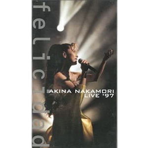

现场视频：第7张
发行年份：1997年
发行日期：9月22日
第一部
| 歌名 | 作词 | 作曲 |
|---|---|---|
| 月は青く | 岡部真理子 | 野田敏一 |
| 水に挿した花 | 只野菜摘 | 広谷順子 |
| Blue On Pink | 三浦徳子 | 国安わたる |
| 約束 | 竹内まりや | 竹内まりや |
| OH NO,OH YES! | 竹内まりや | 竹内まりや |
| スローモーション | 来生えつこ | 来生たかお |
| SOLITUDE | 湯川れい子 | タケカワユキヒデ |
| Fin | 松本一起 | 佐藤健 |
第二部
| 歌名 | 作词 | 作曲 |
|---|---|---|
| 満月 | 三枝翔 | 山口一久 |
| 桜 | 夏野芹子 | U-ki |
| 夜の匂い | 岡部真理子 | 朝本浩文 |
| おいしい水 | 岡部真理子 | 朝本浩文 |
| 赤い薔薇が揺れた | 夏野芹子 | 渡辺未来 |
| MOONLIGHT SHADOW-月に吠えろ | 高見沢俊彦 | 小室哲哉 |
| APPETITE | 夏野芹子 | U-ki |
第三部
| 歌名 | 作词 | 作曲 |
|---|---|---|
| LA BOHÈME | 湯川れい子 | 都志見隆 |
| BLONDE | Biddu・Winston Sela・麻生圭子 | Biddu・Winston Sela |
| La Liberté | 森由里子 | ジョーイ・カーボーン |
| SO MAD | 冬杜花代子 | 関根安里 |
| 愛撫 | 松本隆 | 小室哲哉 |
| TATTOO | 森由里子 | 関根安里 |
| 飾りじゃないのよ涙は | 井上陽水 | 井上陽水 |
| DESIRE -情熱- | 阿木燿子 | 鈴木キサブロー |
| ミ・アモーレ〔Meu amor é･･･〕 | 康珍化 | 松岡直也 |
安可
| 歌名 | 作词 | 作曲 |
|---|---|---|
| 駅 | 竹内まりや | 竹内まりや |
| 難破船 | 加藤登紀子 | 加藤登紀子 |
首发规格：VHS: MVVH-5，LD: MVLH-5
唱片公司：Universal Victor
再发行：
2000年6月16日 - DVD: MVBH-3
2002年12月4日 - DVD: UMBK-1048
2016年5月4日 - DVD: UPBH-1404~10
2017年3月8日 - DVD: UPBY-9036
2020年10月7日 - DVD: UPBY-9110